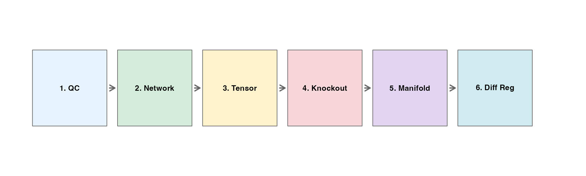
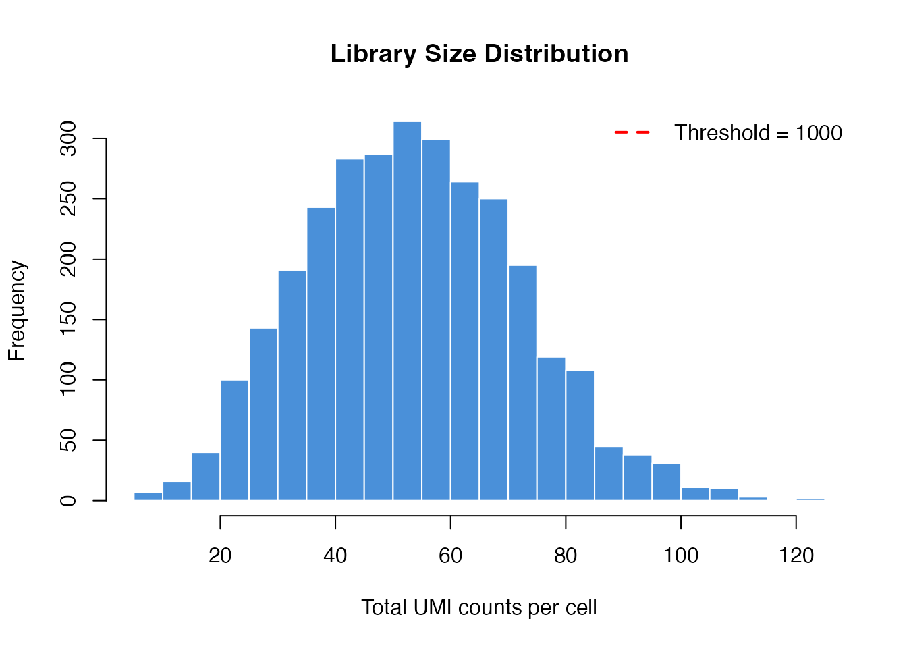
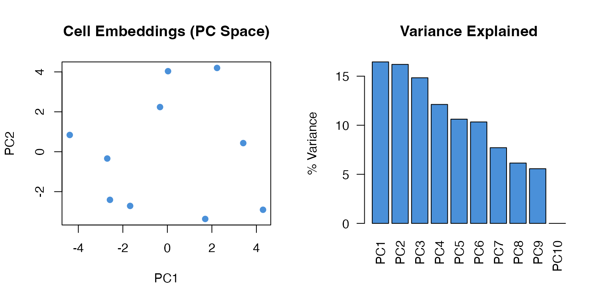
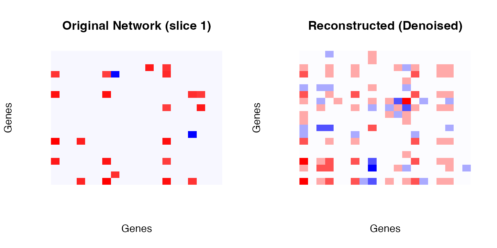
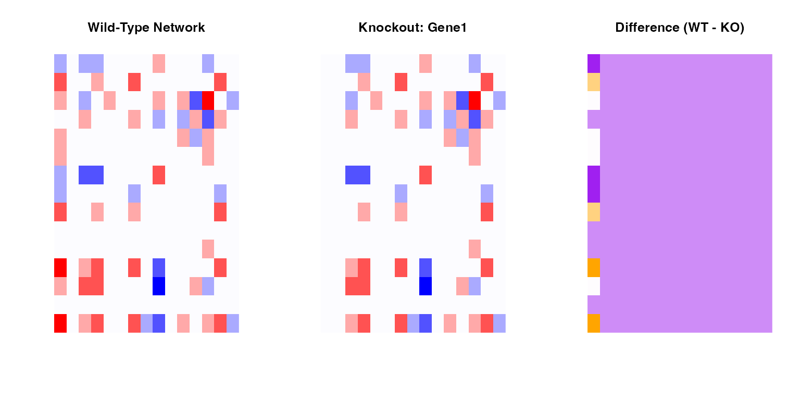
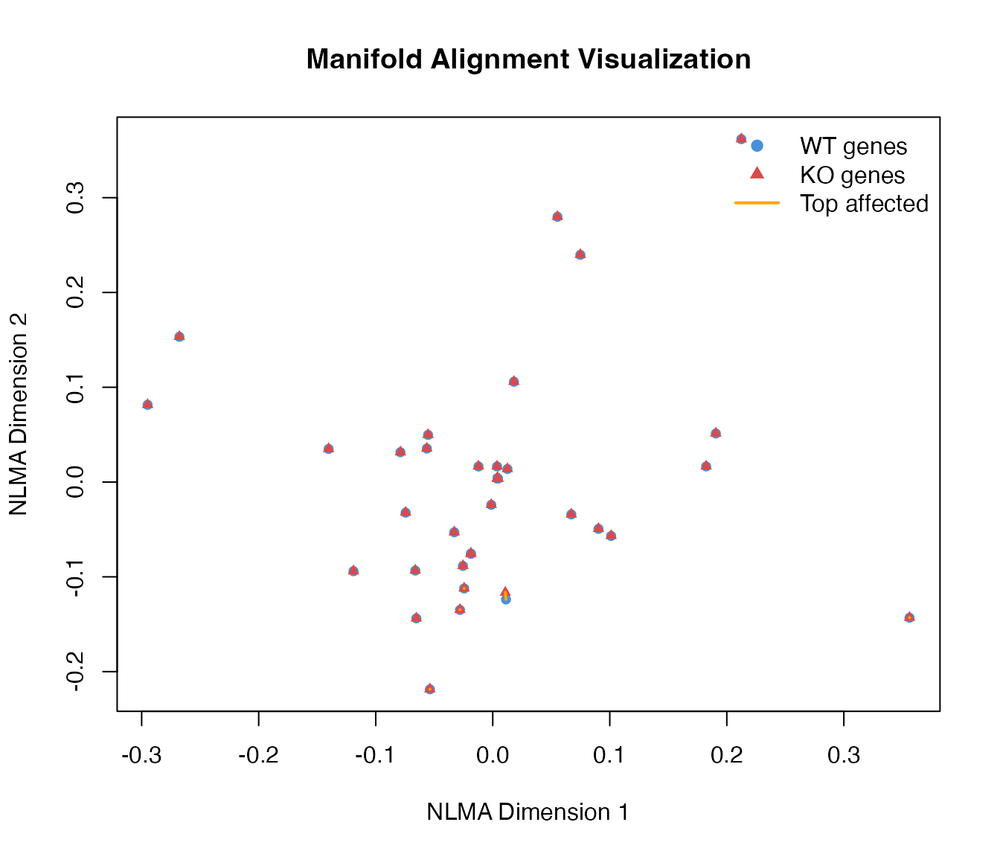
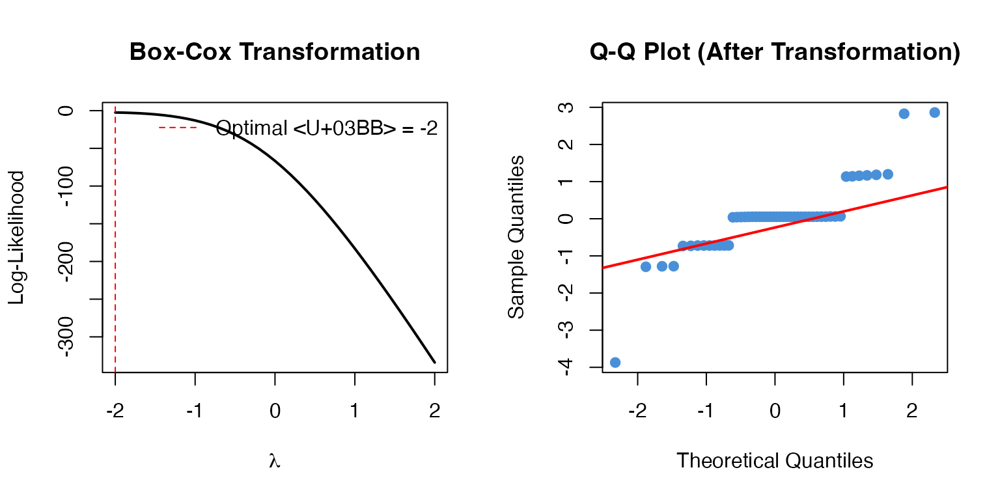

Algorithm Theory and Mathematical Foundation
Zaoqu Liu
2026-01-23
Source:vignettes/algorithm-theory.Rmd
algorithm-theory.RmdOverview
The scTenifoldKnk workflow consists of six main steps:
- Quality Control - Filter cells and genes
- Network Construction - Build gene regulatory networks using PCR
- Tensor Decomposition - Denoise networks via CP decomposition
- Virtual Knockout - Simulate gene knockout
- Manifold Alignment - Align WT and KO networks
- Differential Regulation - Identify affected genes

Step 1: Quality Control
Mathematical Formulation
Let be the count matrix where is the number of genes and is the number of cells.
Library Size Filter:
Gene Detection Filter:
Mitochondrial Content Filter:
library(scTenifoldKnk)
# Load data
data_path <- system.file("single-cell/example.csv", package = "scTenifoldKnk")
scRNAseq <- as.matrix(read.csv(data_path, row.names = 1))
# Compute library sizes
library_sizes <- colSums(scRNAseq)
# Visualize library size distribution
hist(library_sizes, breaks = 30, col = "#4A90D9", border = "white",
main = "Library Size Distribution",
xlab = "Total UMI counts per cell")
abline(v = 1000, col = "red", lwd = 2, lty = 2)
legend("topright", "Threshold = 1000", col = "red", lty = 2, lwd = 2, bty = "n")
Step 2: Network Construction (Principal Component Regression)
Algorithm
For each gene , we perform leave-one-out principal component regression:
- Center and scale the expression matrix
- Exclude gene :
- Compute SVD:
- Extract top components:
- Regress gene on PCs:
- Transform back:
Mathematical Derivation
The network weight represents the regulatory relationship:
This captures the conditional covariance between genes through the principal component space.
# Illustrate PCA on gene expression
set.seed(42)
X <- matrix(rpois(500, 10), nrow = 50, ncol = 10)
rownames(X) <- paste0("Gene", 1:50)
X <- X[rowSums(X) > 0, ]
# Standardize
X_scaled <- scale(t(X))
# PCA
pca <- prcomp(X_scaled, center = FALSE)
# Visualize
par(mfrow = c(1, 2))
# PC scores
plot(pca$x[, 1], pca$x[, 2],
pch = 19, col = "#4A90D9",
xlab = "PC1", ylab = "PC2",
main = "Cell Embeddings (PC Space)")
# Variance explained
var_explained <- (pca$sdev^2 / sum(pca$sdev^2)) * 100
barplot(var_explained[1:10],
names.arg = paste0("PC", 1:10),
col = "#4A90D9",
main = "Variance Explained",
ylab = "% Variance",
las = 2)
Step 3: Tensor Decomposition (CP-ALS)
CANDECOMP/PARAFAC Decomposition
Given a 3-way tensor (networks stacked along third mode):
where: - are gene factor vectors - are network weights - are component weights - denotes outer product
Alternating Least Squares (ALS) Algorithm
For each mode :
where is the mode- unfolding and is the Khatri-Rao product pseudoinverse.
Reconstruction
The denoised network is the weighted average:
# Build multiple networks
networks <- makeNetworksFast(X, nNet = 5, nCells = 8, nComp = 3,
verbose = FALSE, seed = 42)
# Tensor decomposition
td_result <- tensorDecomposition(networks, K = 3, maxIter = 100)
# Visualize reconstruction
par(mfrow = c(1, 2))
# Original (first network)
net1 <- as.matrix(networks[[1]])
image(net1[1:20, 1:20],
col = colorRampPalette(c("blue", "white", "red"))(100),
main = "Original Network (slice 1)",
xlab = "Genes", ylab = "Genes", axes = FALSE)
# Reconstructed
recon <- as.matrix(td_result$X)
image(recon[1:20, 1:20],
col = colorRampPalette(c("blue", "white", "red"))(100),
main = "Reconstructed (Denoised)",
xlab = "Genes", ylab = "Genes", axes = FALSE)
Step 4: Virtual Knockout
Implementation
The knockout operation sets all outgoing edges from gene to zero:
This simulates the loss of regulatory capacity of gene .
# Get WT network
WT <- as.matrix(td_result$X)
# Perform knockout
KO <- WT
knockout_gene <- "Gene1"
if (knockout_gene %in% rownames(KO)) {
ko_idx <- which(rownames(KO) == knockout_gene)
KO[ko_idx, ] <- 0
}
# Visualize difference
par(mfrow = c(1, 3))
# WT
image(WT[1:15, 1:15],
col = colorRampPalette(c("blue", "white", "red"))(100),
main = "Wild-Type Network",
axes = FALSE)
# KO
image(KO[1:15, 1:15],
col = colorRampPalette(c("blue", "white", "red"))(100),
main = paste("Knockout:", knockout_gene),
axes = FALSE)
# Difference
diff_net <- WT - KO
image(diff_net[1:15, 1:15],
col = colorRampPalette(c("purple", "white", "orange"))(100),
main = "Difference (WT - KO)",
axes = FALSE)
Step 5: Manifold Alignment
Non-linear Manifold Alignment (NLMA)
Given two networks and , we construct a joint graph:
where is the alignment matrix and controls alignment strength.
Spectral Embedding
Compute the graph Laplacian:
where .
The embedding is given by the eigenvectors corresponding to the smallest non-zero eigenvalues.
# Perform manifold alignment
MA <- manifoldAlignment(Matrix::Matrix(WT, sparse = TRUE),
Matrix::Matrix(KO, sparse = TRUE),
d = 2)
# Extract WT and KO embeddings
n_genes <- nrow(WT)
WT_embed <- MA[1:n_genes, ]
KO_embed <- MA[(n_genes+1):(2*n_genes), ]
# Compute distances
distances <- sqrt(rowSums((WT_embed - KO_embed)^2))
# Plot
plot(WT_embed[, 1], WT_embed[, 2],
pch = 19, col = "#4A90D9", cex = 0.8,
xlab = "NLMA Dimension 1", ylab = "NLMA Dimension 2",
main = "Manifold Alignment Visualization")
points(KO_embed[, 1], KO_embed[, 2],
pch = 17, col = "#D94A4A", cex = 0.8)
# Draw connections for top affected genes
top_idx <- order(distances, decreasing = TRUE)[1:5]
for (i in top_idx) {
lines(c(WT_embed[i, 1], KO_embed[i, 1]),
c(WT_embed[i, 2], KO_embed[i, 2]),
col = "orange", lwd = 2)
}
legend("topright",
legend = c("WT genes", "KO genes", "Top affected"),
col = c("#4A90D9", "#D94A4A", "orange"),
pch = c(19, 17, NA), lty = c(NA, NA, 1), lwd = c(NA, NA, 2),
bty = "n")
Step 6: Differential Regulation Analysis
Distance-Based Statistics
For each gene , compute the Euclidean distance between WT and KO embeddings:
Statistical Testing
Under the null hypothesis, follows a chi-square distribution:
P-values are computed as:
Multiple Testing Correction
Benjamini-Hochberg FDR:
# Compute statistics
names(distances) <- rownames(WT)
# Box-Cox transformation
distances_pos <- pmax(distances, 1e-10)
bc_result <- MASS::boxcox(distances_pos ~ 1, plotit = FALSE)
lambda_opt <- bc_result$x[which.max(bc_result$y)]
# Apply transformation
if (abs(lambda_opt) < 0.01) {
transformed <- log(distances_pos)
} else {
transformed <- distances_pos^lambda_opt
}
# Z-scores
Z <- scale(transformed)[, 1]
par(mfrow = c(1, 2))
# Box-Cox optimization
plot(bc_result$x, bc_result$y, type = "l", lwd = 2,
xlab = expression(lambda), ylab = "Log-Likelihood",
main = "Box-Cox Transformation")
abline(v = lambda_opt, col = "red", lty = 2)
legend("topright", paste("Optimal λ =", round(lambda_opt, 2)),
col = "red", lty = 2, bty = "n")
# Q-Q plot
qqnorm(Z, main = "Q-Q Plot (After Transformation)", pch = 19, col = "#4A90D9")
qqline(Z, col = "red", lwd = 2)
Summary
The scTenifoldKnk algorithm provides a mathematically rigorous framework for:
- Network inference via principal component regression
- Noise reduction via tensor decomposition
- Comparative analysis via manifold alignment
- Statistical testing via chi-square distribution
This enables researchers to predict gene knockout effects in silico, saving time and resources compared to wet-lab experiments.
References
Osorio, D., et al. (2020). scTenifoldKnk: An efficient virtual knockout tool for gene function predictions via single-cell gene regulatory network perturbation.
Kolda, T. G., & Bader, B. W. (2009). Tensor decompositions and applications. SIAM review.
Box, G. E., & Cox, D. R. (1964). An analysis of transformations. Journal of the Royal Statistical Society.
Session Info
sessionInfo()
#> R version 4.4.0 (2024-04-24)
#> Platform: aarch64-apple-darwin20
#> Running under: macOS 15.6.1
#>
#> Matrix products: default
#> BLAS: /Library/Frameworks/R.framework/Versions/4.4-arm64/Resources/lib/libRblas.0.dylib
#> LAPACK: /Library/Frameworks/R.framework/Versions/4.4-arm64/Resources/lib/libRlapack.dylib; LAPACK version 3.12.0
#>
#> locale:
#> [1] C
#>
#> time zone: Asia/Shanghai
#> tzcode source: internal
#>
#> attached base packages:
#> [1] stats graphics grDevices utils datasets methods base
#>
#> other attached packages:
#> [1] scTenifoldKnk_2.1.0
#>
#> loaded via a namespace (and not attached):
#> [1] cli_3.6.5 knitr_1.51 rlang_1.1.7 xfun_0.56
#> [5] otel_0.2.0 textshaping_1.0.4 jsonlite_2.0.0 htmltools_0.5.9
#> [9] ragg_1.5.0 sass_0.4.10 rmarkdown_2.30 grid_4.4.0
#> [13] evaluate_1.0.5 jquerylib_0.1.4 MASS_7.3-65 fastmap_1.2.0
#> [17] yaml_2.3.12 lifecycle_1.0.5 compiler_4.4.0 RSpectra_0.16-2
#> [21] fs_1.6.6 htmlwidgets_1.6.4 Rcpp_1.1.1 lattice_0.22-7
#> [25] systemfonts_1.3.1 digest_0.6.39 R6_2.6.1 parallel_4.4.0
#> [29] bslib_0.9.0 Matrix_1.7-4 tools_4.4.0 pkgdown_2.1.3
#> [33] cachem_1.1.0 desc_1.4.3